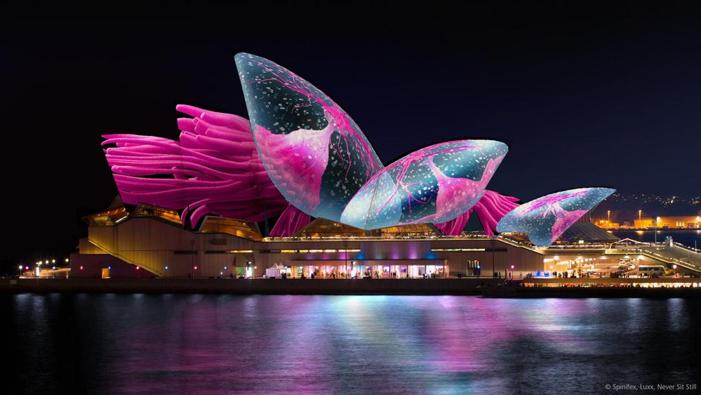
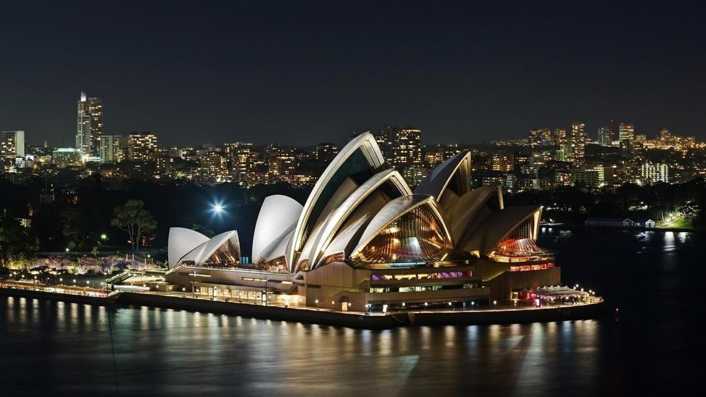
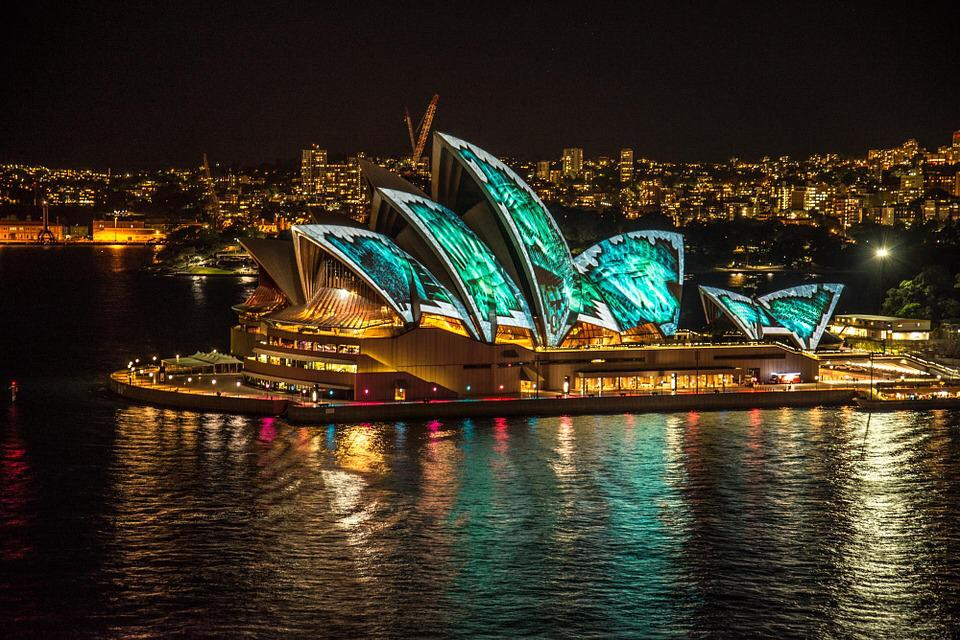
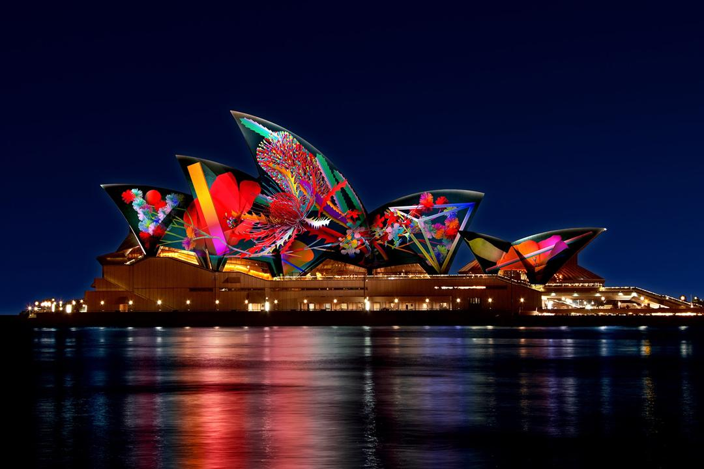

OPERA DE SYDNEY
   
L’opéra de Sydney (en anglais : Sydney Opera House), à Sydney (Nouvelle-Galles du Sud, Australie), est l'un des plus célèbres bâtiments du xxe siècle et un haut-lieu de représentation des arts notamment lyriques. Son architecture originale, qui ressemble à un voilier pour les uns, ou à un coquillage pour les autres, a été imaginée par le Danois Jørn Utzon. Situé dans le port de Sydney, à Bennelong Point, il est entouré d'un parc boisé au sud et est voisin du célèbre pont Harbour Bridge d'une seule arche. Le paysage qui en résulte est devenu un symbole de l'Australie et de Sydney particulièrement. L'opéra est aujourd'hui une attraction touristique majeure de la ville bien que la plupart des visiteurs n'aient pas l'occasion d'assister à une représentation. Siège de l'Opéra d'Australie, de la Compagnie de théâtre de Sydney et de l'Orchestre symphonique de Sydney, l'Opéra accueille également beaucoup de productions artistiques étrangères en tournée. Il est administré par le Opera House Trust, structure régie par le Ministère des Arts de la Nouvelle-Galles du Sud.
A l'intérieur de l'opera house